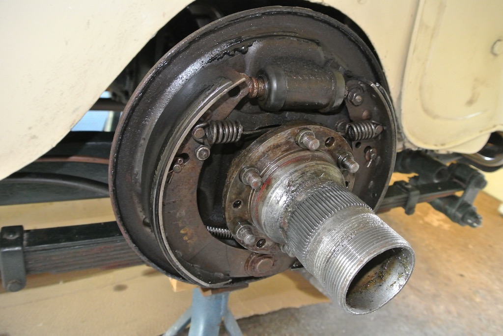
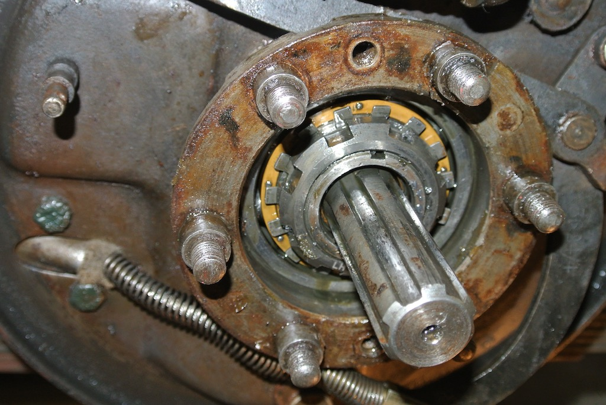
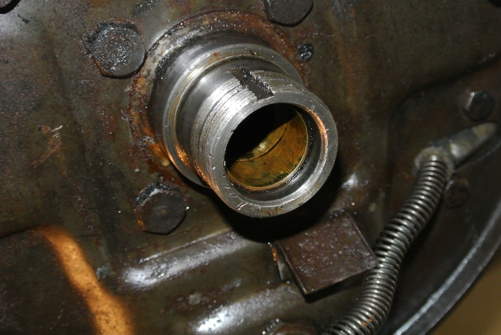
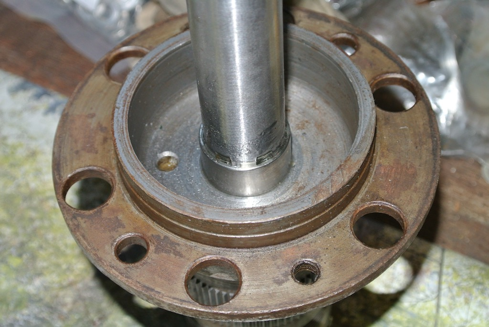
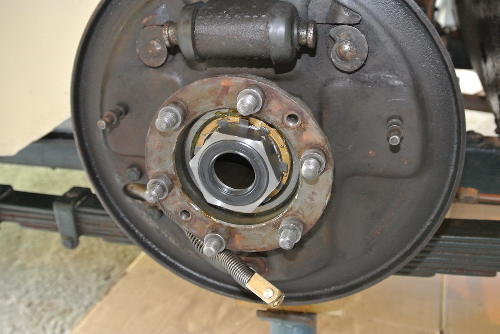

It Could Have Been So Much Worse!
When you do regular checks on your car and identify a problem before it becomes catastrophic, is that good planning or just luck? Perhaps I should explain the background. There is a well documented design flaw on the TC whereby oil from the differential can work its way down the half shafts and into the brake drums. The mechanism to prevent this is a short bronze tube with a spiral groove that is intended to 'wick' the oil back into the axle. But it doesn't work very well. Consequently whenever I have the rear wheels of TC4985 off the ground I check them for oil and, up until this event, they have been dry.
Then, in August 2017, I took TC4985 on one of the regular Sussex Wanderers outings, starting at the foot of Bury Hill (for coffee) and winding through the Sussex countryside to Goodwood motor racing track (for lunch). It was raining all the way, so even before we made four ‘parade’ laps of the circuit I was quite wet. Although the hood on the TC is fairly new and made of double duck (two layers of canvas sandwiching a rubberised layer) the stitching lets the water through! So by the time I got home, after a 78 mile run, the car was in a pretty messy state and thus my decision to put it on axle stands so as to get underneath to clean it.
This time, when I took off the near-side rear hub I found what you can see in the photo, brake linings soaked in oil and oil running down the brake back plate! There is much documented about this 'design' problem, but this was clearly a different order of magnitude. So I decided to remove the hub and half shaft to investigate.
 It’s perhaps worthwhile just describing the mechanical arrangement of the rear hub. T-series cars, like the MGA and MGB that followed, have a solid rear axle, connected to the chassis/body by leaf springs. The diagram shows a section through the end of the axle and the hub, although it is not to scale. You can see that the inner race of the bearing is clamped to the axle using a type of nut that requires a special tool to tighten it. The next photo shows the nut, with a tab washer behind it. The bearing is pressed into the bearing carrier, which provides the studs on to which the hub and brake drum are bolted. The hub is pressed on to the half shaft, the other end of which engages with the differential. Apparently it needs a three-ton press to get the hub on to the end of the half shaft. The oil scroll is pressed into the axle, but does not make contact with the half shaft. The intent is that the spiral groove in the scroll ‘encourages’ oil from the differential to move back into the axle.
It’s perhaps worthwhile just describing the mechanical arrangement of the rear hub. T-series cars, like the MGA and MGB that followed, have a solid rear axle, connected to the chassis/body by leaf springs. The diagram shows a section through the end of the axle and the hub, although it is not to scale. You can see that the inner race of the bearing is clamped to the axle using a type of nut that requires a special tool to tighten it. The next photo shows the nut, with a tab washer behind it. The bearing is pressed into the bearing carrier, which provides the studs on to which the hub and brake drum are bolted. The hub is pressed on to the half shaft, the other end of which engages with the differential. Apparently it needs a three-ton press to get the hub on to the end of the half shaft. The oil scroll is pressed into the axle, but does not make contact with the half shaft. The intent is that the spiral groove in the scroll ‘encourages’ oil from the differential to move back into the axle.
What you should not see is the end of the half shaft sticking out of the axle. When I separated the hub from the bearing carrier, the hub simply slid off the half shaft. I also found that the nut holding the bearing to the axle was only finger tight, whereas is should have been tightened to about 130 ft-lb, and the inner tab on the washer behind the nut had been torn off! The half shaft was also stuck in the differential. If the nut had continued to undo then the whole hub, bearing carrier and brake drum assembly could have come off the car! The reason it hadn’t is probably that the near-side of the axle has a left-hand thread, so the nut is inclined to tighten as the wheel rotates forward. So it could have been so much worse and I think that I was lucky.
The solution to the documented ‘design flaw’ is to replace the ‘special’ nut with a large hexagonal nut with an integrated lip seal. However, firstly I had to remove the stuck half shaft and then remove the original oil scrolls.
I said that the half shaft was stuck in the differential. Actually, it would slide out a couple of inches, but then stick. Luckily, the spider cross in the differential has a hole in the middle and so I was able to drive out the half shaft from the other side. In the next photo you can see the bronze oil scroll inside the end of the axle.
So as to provide a smooth surface for the lip seal, a sleeve has to be epoxied on to the half shaft, covering the splines. This means that the oil scrolls need to be removed. I used a technique that I had used before when you can’t get to the other side of a bush. I found a large washer, the same size as the bush, filed flats on it so that it could be pushed down the bore of the bush and elongated the hole through the middle so that it would tilt on a bolt. Then with a large socket on the other end I was able to pull out the oil scrolls by tightening a nut on the bolt, although one oil scroll needed to be hammered in a small amount (to unstick it) before I could remove it.
Putting things back was simpler. The next photo shows a new nut, with seal, fitted to the axle and clamping the inner race of the bearing to the axle. Luckily the bearings were still in good condition and only needed cleaning and repacking with grease. Then we can see a half shaft and hub with a sleeve epoxied over the splines. You need to make sure that the end of the splines are filled with resin so as to prevent any oil ingress.
 Finally we see the new hub (and half shaft) fitted and waiting for the brake drum to be slid on. So after 104 days off the road (the longest period so far without being able to drive the car), I lowered TC4985 to the ground and took it for my usual 'figure of eight' test run. After that I raised it off the ground again, checked for any oil in the rear drums, checked the tightness of the various bolts that I had replaced and adjusted the brakes. So far so good; what luck.
Finally we see the new hub (and half shaft) fitted and waiting for the brake drum to be slid on. So after 104 days off the road (the longest period so far without being able to drive the car), I lowered TC4985 to the ground and took it for my usual 'figure of eight' test run. After that I raised it off the ground again, checked for any oil in the rear drums, checked the tightness of the various bolts that I had replaced and adjusted the brakes. So far so good; what luck.
You will notice that the brake shoes are now clear of oil, but that is another story for another time. As are an examination of the differential and cleaning of the prop shaft and underside of the tunnel.
And the lesson to be learnt; make regular check on your classic, particularly where others have reported problems, and keep your fingers crossed!
(Written 4th April 2018; published in WSMGOC Main Gear, June 2018.)
© David James 2020 Last updated: 28th April 2020